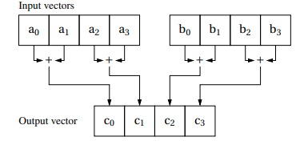

Intel SIMD Intrinsics¶
SIMD Intrinsics¶
SIMD: Single Instruction, Multiple Data
Intrinsics: low-level, compiler-specific instructions that allow programmers to leverage SIMD capabilities without writing assembly code. They provide a higher-level interface for SIMD programming.
Motivation:
Critical for performance optimization in certain applications
Harness the power of modern CPUs
Characteristics:
Hardware-specific
Compiler-specific
Intel Intrinsics¶
Overview¶
Only available on Intel processors
Available in C/C++ and Fortran
Evolution
Multimedia Extensions (MMX)
Streaming SIMD Extensions (SSE)
Advanced Vector Extensions (AVX)
Operations
Arithmetic
Logical
Data manipulation
Conversion
Shuffle
…
SSE4 Intrinsics in C language¶
Environment setup
Compiler: gcc
-march=nativeflag on a computer with intel CPU
Hardware: Intel CPUs
Include header file
#include <immintrin.h>
SSE4 Example¶
Matrix multiplication of a 4x4 matrix by a size-4 vector using SSE4 intrinsics is a fundamental operation. For larger matrices, this example serves as a building block for block-wise matrix multiplication, where the multiplication is efficiently computed in smaller chunks. This approach enhances computational efficiency and scalability when dealing with matrices of larger dimensions.
__m128The
__m128type is used to represent a 128-bit register that can hold 4 float numbers. The number of variables you can declare of this type is limited by the number of registers available on the CPU.The
_mm_loadu_psintrinsicThis intrinsic loads 4 float numbers from an unaligned memory address into a
__m128register. The_mm_load_psintrinsic can be used to load 4 float numbers from an aligned memory address.The
_mm_storeu_psintrinsicThis intrinsic stores 4 float numbers from a
__m128register into an unaligned memory address. The_mm_store_psintrinsic can be used to store 4 float numbers from a__m128register into an aligned memory address.The
_mm_add_psintrinsicThis intrinsic adds two
__m128registers element-wise and returns the result in a__m128register.The
_mm_hadd_psintrinsicThis intrinsic adds two
__m128registers horizontally and returns the result in a__m128register. This horizontal addition adds the neighboring two elements from the two registers to create a new register. The first two elements of the result register are the sums from the first register, and the last two elements of the result register are the sums from the second register.The
_mm_mul_psintrinsicThis intrinsic multiplies two
__m128registers element-wise and returns the result in a__m128register.All intrinsics used in the example are the unaligned versions. The aligned versions are faster but require the memory addresses to be aligned to 16 bytes.